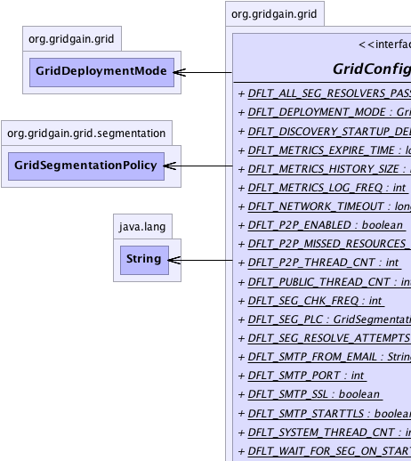
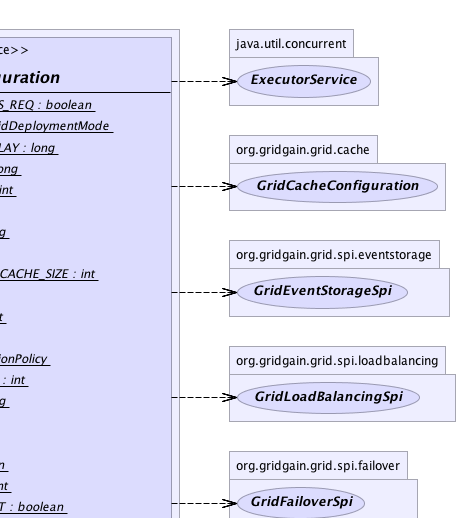
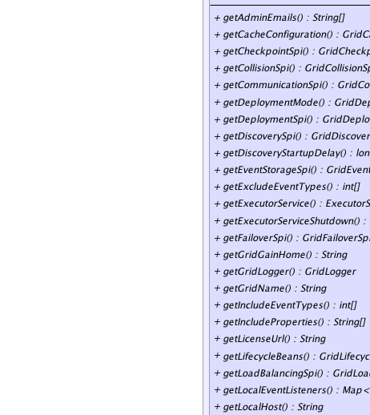
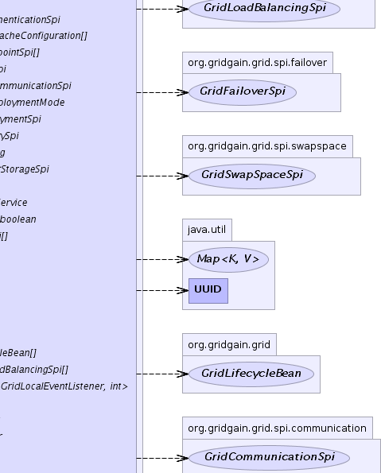
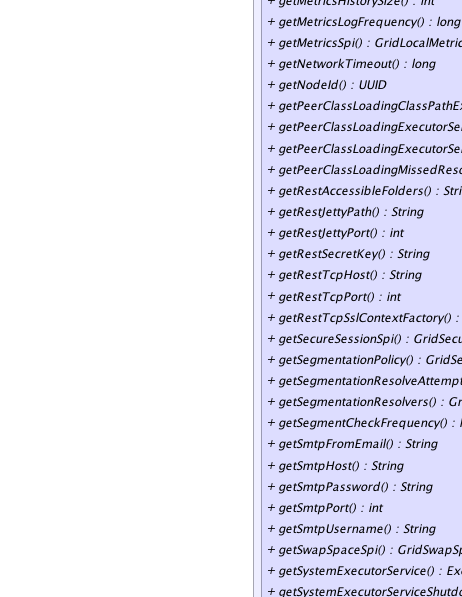
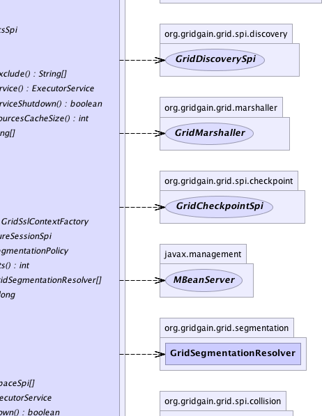
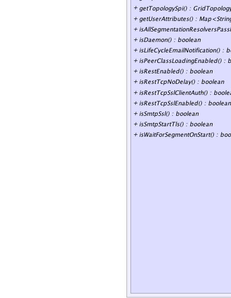
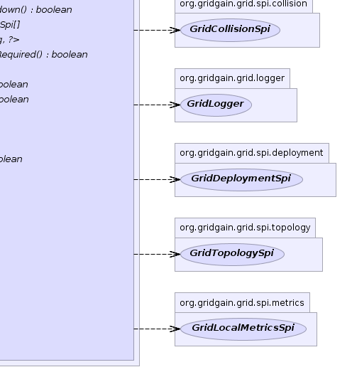

|
|

|

|
|

|

|

|
GridGain™ 4.0.0c
Community Edition |
|||||||||
| PREV CLASS NEXT CLASS | FRAMES NO FRAMES | |||||||||
| SUMMARY: NESTED | FIELD | CONSTR | METHOD | DETAIL: FIELD | CONSTR | METHOD | |||||||||
public interface GridConfiguration
This interface defines grid runtime configuration. This configuration is passed to
GridFactory.start(GridConfiguration) method. It defines all configuration
parameters required to start a grid instance. Usually, a special
class called "loader" will create an instance of this interface and apply
GridFactory.start(GridConfiguration) method to initialize GridGain instance.
Note, that absolutely every configuration property in GridConfiguration is optional.
One can simply create new instance of GridConfigurationAdapter, for example,
and pass it to GridFactory.start(GridConfiguration) to start grid with
default configuration. See GridFactory documentation for information about
default configuration properties used and more information on how to start grid.
For more information about grid configuration and startup refer to GridFactory
documentation which includes description and default values for every configuration
property.
| Wiki | |
| Forum |
|  |  |
|  |  |
|  |  |
|  |  |
| Field Summary | |
|---|---|
static String |
COURTESY_LOGGER_NAME
Courtesy notice log category. |
static boolean |
DFLT_ALL_SEG_RESOLVERS_PASS_REQ
Default value for all segmentation resolvers pass required. |
static GridDeploymentMode |
DFLT_DEPLOYMENT_MODE
Default deployment mode (value is GridDeploymentMode.SHARED). |
static long |
DFLT_DISCOVERY_STARTUP_DELAY
Default discovery startup delay in milliseconds (value is 60,000ms). |
static long |
DFLT_METRICS_EXPIRE_TIME
Default metrics expire time. |
static int |
DFLT_METRICS_HISTORY_SIZE
Default metrics history size (value is 10000). |
static long |
DFLT_METRICS_LOG_FREQ
Default frequency of metrics log print out. |
static long |
DFLT_NETWORK_TIMEOUT
Default maximum timeout to wait for network responses in milliseconds (value is 5,000ms). |
static boolean |
DFLT_P2P_ENABLED
Default flag for peer class loading. |
static int |
DFLT_P2P_MISSED_RESOURCES_CACHE_SIZE
Default cache size for missed resources. |
static int |
DFLT_P2P_THREAD_CNT
Default size of peer class loading thread pool. |
static int |
DFLT_PUBLIC_THREAD_CNT
Default size of public thread pool. |
static long |
DFLT_SEG_CHK_FREQ
Default segment check frequency in discovery manager. |
static org.gridgain.grid.segmentation.GridSegmentationPolicy |
DFLT_SEG_PLC
Default segmentation policy. |
static int |
DFLT_SEG_RESOLVE_ATTEMPTS
Default value segmentation resolve attempts count. |
static String |
DFLT_SMTP_FROM_EMAIL
Default FROM email address. |
static int |
DFLT_SMTP_PORT
Default SMTP port. |
static boolean |
DFLT_SMTP_SSL
Default SSL enabled flag. |
static boolean |
DFLT_SMTP_STARTTLS
Default STARTTLS enabled flag. |
static int |
DFLT_SYSTEM_THREAD_CNT
Default size of system thread pool. |
static boolean |
DFLT_TCP_NODELAY
Default TCP_NODELAY flag. |
static int |
DFLT_TCP_PORT
Default TCP server port. |
static boolean |
DFLT_WAIT_FOR_SEG_ON_START
Default value for wait for segment on startup flag. |
| Method Summary | |
|---|---|
String[] |
getAdminEmails()
Gets optional set of admin emails where email notifications will be set. |
GridAuthenticationSpi |
getAuthenticationSpi()
Should return fully configured authentication SPI implementation. |
GridCacheConfiguration[] |
getCacheConfiguration()
Gets configuration (descriptors) for all caches. |
GridCheckpointSpi[] |
getCheckpointSpi()
Should return fully configured checkpoint SPI implementation. |
GridCollisionSpi |
getCollisionSpi()
Should return fully configured collision SPI implementation. |
GridCommunicationSpi |
getCommunicationSpi()
Should return fully configured SPI communication implementation. |
GridDeploymentMode |
getDeploymentMode()
Gets deployment mode for deploying tasks and other classes on this node. |
GridDeploymentSpi |
getDeploymentSpi()
Should return fully configured deployment SPI implementation. |
GridDiscoverySpi |
getDiscoverySpi()
Should return fully configured discovery SPI implementation. |
long |
getDiscoveryStartupDelay()
This value is used to expire messages from waiting list whenever node discovery discrepancies happen. |
GridEventStorageSpi |
getEventStorageSpi()
Should return fully configured event SPI implementation. |
int[] |
getExcludeEventTypes()
Gets array of event types, which will not be recorded. |
ExecutorService |
getExecutorService()
Should return an instance of fully configured thread pool to be used in grid. |
boolean |
getExecutorServiceShutdown()
Shutdown flag for executor service. |
GridFailoverSpi[] |
getFailoverSpi()
Should return fully configured failover SPI implementation. |
String |
getGridGainHome()
Should return GridGain installation home folder. |
GridLogger |
getGridLogger()
Should return an instance of logger to use in grid. |
String |
getGridName()
Gets optional name of this grid instance. |
int[] |
getIncludeEventTypes()
Gets array of event types, which will be recorded. |
String[] |
getIncludeProperties()
Gets array of system or environment properties to include into node attributes. |
String |
getLicenseUrl()
Gets custom license file URL to be used instead of default license file location. |
GridLifecycleBean[] |
getLifecycleBeans()
Returns a collection of life-cycle beans. |
GridLoadBalancingSpi[] |
getLoadBalancingSpi()
Should return fully configured load balancing SPI implementation. |
Map<GridLocalEventListener,int[]> |
getLocalEventListeners()
Gets map of pre-configured local event listeners. |
String |
getLocalHost()
Gets system-wide local address or host for all GridGain components to bind to. |
GridMarshaller |
getMarshaller()
Should return an instance of marshaller to use in grid. |
MBeanServer |
getMBeanServer()
Should return MBean server instance. |
long |
getMetricsExpireTime()
Elapsed time in milliseconds after which node metrics are considered expired. |
int |
getMetricsHistorySize()
Number of node metrics to keep in memory to calculate totals and averages. |
long |
getMetricsLogFrequency()
Gets frequency of metrics log print out. |
GridLocalMetricsSpi |
getMetricsSpi()
Should return fully configured metrics SPI implementation. |
long |
getNetworkTimeout()
Maximum timeout in milliseconds for network requests. |
UUID |
getNodeId()
Unique identifier for this node within grid. |
String[] |
getPeerClassLoadingClassPathExclude()
Should return list of packages from the system classpath that need to be peer-to-peer loaded from task originating node. '*' is supported at the end of the package name which means that all sub-packages and their classes are included like in Java package import clause. |
ExecutorService |
getPeerClassLoadingExecutorService()
Should return an instance of fully configured executor service which is in charge of peer class loading requests/responses. |
boolean |
getPeerClassLoadingExecutorServiceShutdown()
Should return flag of peer class loading executor service shutdown when the grid stops. |
int |
getPeerClassLoadingMissedResourcesCacheSize()
Returns missed resources cache size. |
String[] |
getRestAccessibleFolders()
Gets list of folders that are accessible for log reading command. |
String |
getRestJettyPath()
Gets path, either absolute or relative to GRIDGAIN_HOME, to Jetty
XML configuration file. |
int |
getRestJettyPort()
Gets port on which jetty rest server should be bound. |
String |
getRestSecretKey()
Gets secret key to authenticate REST requests. |
String |
getRestTcpHost()
Gets host for TCP binary protocol server. |
int |
getRestTcpPort()
Gets port for TCP binary protocol server. |
GridSslContextFactory |
getRestTcpSslContextFactory()
Gets context factory that will be used for creating a secure socket layer of rest binary server. |
GridSecureSessionSpi |
getSecureSessionSpi()
Should return fully configured secure session SPI implementation. |
org.gridgain.grid.segmentation.GridSegmentationPolicy |
getSegmentationPolicy()
Returns segmentation policy. |
int |
getSegmentationResolveAttempts()
Gets segmentation resolve attempts. |
org.gridgain.grid.segmentation.GridSegmentationResolver[] |
getSegmentationResolvers()
Returns a collection of segmentation resolvers. |
long |
getSegmentCheckFrequency()
Returns frequency of network segment check by discovery manager. |
String |
getSmtpFromEmail()
Gets optional FROM email address for email notifications. |
String |
getSmtpHost()
Gets SMTP host name or null if SMTP is not configured. |
String |
getSmtpPassword()
SMTP password or null if not used. |
int |
getSmtpPort()
Gets SMTP port. |
String |
getSmtpUsername()
Gets SMTP username or null if not used. |
GridSwapSpaceSpi[] |
getSwapSpaceSpi()
Should return fully configured swap space SPI implementations. |
ExecutorService |
getSystemExecutorService()
Executor service that is in charge of processing GridTaskSession messages
and job responses. |
boolean |
getSystemExecutorServiceShutdown()
Shutdown flag for system executor service. |
GridTopologySpi[] |
getTopologySpi()
Should return fully configured topology SPI implementation. |
Map<String,?> |
getUserAttributes()
Should return any user-defined attributes to be added to this node. |
boolean |
isAllSegmentationResolversPassRequired()
Gets all segmentation resolvers pass required flag. |
boolean |
isDaemon()
Whether or not this node should be a daemon node. |
boolean |
isLifeCycleEmailNotification()
Whether or not send email notifications on node start and stop. |
boolean |
isPeerClassLoadingEnabled()
Returns true if peer class loading is enabled, false
otherwise. |
boolean |
isRestEnabled()
Gets flag indicating whether external REST access is enabled or not. |
boolean |
isRestTcpNoDelay()
Gets flag indicating whether TCP_NODELAY option should be set for accepted client connections. |
boolean |
isRestTcpSslClientAuth()
Gets a flag indicating whether or not remote clients will be required to have a valid SSL certificate which validity will be verified with trust manager. |
boolean |
isRestTcpSslEnabled()
Whether secure socket layer should be enabled on binary rest server. |
boolean |
isSmtpSsl()
Whether or not to use SSL fot SMTP. |
boolean |
isSmtpStartTls()
Whether or not to use STARTTLS fot SMTP. |
boolean |
isWaitForSegmentOnStart()
Gets wait for segment on startup flag. |
| Field Detail |
|---|
static final String COURTESY_LOGGER_NAME
static final boolean DFLT_P2P_ENABLED
true
which means that peer class loading is enabled.
static final int DFLT_METRICS_HISTORY_SIZE
10000).
static final long DFLT_METRICS_EXPIRE_TIME
Long.MAX_VALUE which
means that metrics never expire.
static final long DFLT_NETWORK_TIMEOUT
5,000ms).
static final long DFLT_DISCOVERY_STARTUP_DELAY
60,000ms).
static final GridDeploymentMode DFLT_DEPLOYMENT_MODE
GridDeploymentMode.SHARED).
static final int DFLT_P2P_MISSED_RESOURCES_CACHE_SIZE
static final int DFLT_SMTP_PORT
static final boolean DFLT_SMTP_SSL
static final boolean DFLT_SMTP_STARTTLS
static final String DFLT_SMTP_FROM_EMAIL
static final int DFLT_PUBLIC_THREAD_CNT
static final int DFLT_SYSTEM_THREAD_CNT
static final int DFLT_P2P_THREAD_CNT
static final org.gridgain.grid.segmentation.GridSegmentationPolicy DFLT_SEG_PLC
static final boolean DFLT_WAIT_FOR_SEG_ON_START
static final boolean DFLT_ALL_SEG_RESOLVERS_PASS_REQ
static final int DFLT_SEG_RESOLVE_ATTEMPTS
static final long DFLT_SEG_CHK_FREQ
static final long DFLT_METRICS_LOG_FREQ
static final int DFLT_TCP_PORT
static final boolean DFLT_TCP_NODELAY
| Method Detail |
|---|
boolean isLifeCycleEmailNotification()
By default - email notifications are enabled.
True to enable lifecycle email notifications.GridConfiguration.getSmtpHost(),
GridConfiguration.getAdminEmails()@Nullable String getSmtpHost()
null if SMTP is not configured.
Note that GridGain uses SMTP to send emails in critical situations such as license expiration or fatal system errors. It is highly recommended to configure SMTP in production environment.
Note that getSmtpHost() is the only mandatory SMTP
configuration property.
null if SMTP is not configured.GridSystemProperties.GG_SMTP_HOSTboolean isSmtpSsl()
GridConfiguration.DFLT_SMTP_SSL.
Note that GridGain uses SMTP to send emails in critical situations such as license expiration or fatal system errors. It is highly recommended to configure SMTP in production environment.
Note that GridConfiguration.getSmtpHost() is the only mandatory SMTP
configuration property.
GridConfiguration.DFLT_SMTP_SSL,
GridSystemProperties.GG_SMTP_SSLboolean isSmtpStartTls()
GridConfiguration.DFLT_SMTP_STARTTLS.
Note that GridGain uses SMTP to send emails in critical situations such as license expiration or fatal system errors. It is highly recommended to configure SMTP in production environment.
Note that GridConfiguration.getSmtpHost() is the only mandatory SMTP
configuration property.
GridConfiguration.DFLT_SMTP_STARTTLS,
GridSystemProperties.GG_SMTP_STARTTLSint getSmtpPort()
GridConfiguration.DFLT_SMTP_PORT.
Note that GridGain uses SMTP to send emails in critical situations such as license expiration or fatal system errors. It is highly recommended to configure SMTP in production environment.
Note that GridConfiguration.getSmtpHost() is the only mandatory SMTP
configuration property.
GridConfiguration.DFLT_SMTP_PORT,
GridSystemProperties.GG_SMTP_PORT@Nullable String getSmtpUsername()
null if not used.
Note that GridGain uses SMTP to send emails in critical situations such as license expiration or fatal system errors. It is highly recommended to configure SMTP in production environment.
Note that GridConfiguration.getSmtpHost() is the only mandatory SMTP
configuration property.
null.GridSystemProperties.GG_SMTP_USERNAME@Nullable String getSmtpPassword()
null if not used.
Note that GridGain uses SMTP to send emails in critical situations such as license expiration or fatal system errors. It is highly recommended to configure SMTP in production environment.
Note that GridConfiguration.getSmtpHost() is the only mandatory SMTP
configuration property.
null.GridSystemProperties.GG_SMTP_PWD@Nullable String[] getAdminEmails()
Note that GridGain uses SMTP to send emails in critical situations such as license expiration or fatal system errors. It is highly recommended to configure SMTP in production environment.
null - emails will be sent only to the email in the license
if one provided.GridSystemProperties.GG_ADMIN_EMAILS@Nullable String getSmtpFromEmail()
GridConfiguration.DFLT_SMTP_FROM_EMAIL will be used.
null
- GridConfiguration.DFLT_SMTP_FROM_EMAIL will be used by default.GridConfiguration.DFLT_SMTP_FROM_EMAIL,
GridSystemProperties.GG_SMTP_FROMString getGridName()
null will
be used as a default name for the grid instance.
null which is default if non-default name was
not provided.Map<String,?> getUserAttributes()
GridNode.attribute(String) or
GridNode.attributes() methods.
Note that system adds the following (among others) attributes automatically:
{@link System#getProperties()} - All system properties.{@link System#getenv(String)} - All environment properties.Note that grid will add all System properties and environment properties to grid node attributes also. SPIs may also add node attributes that are used for SPI implementation.
NOTE: attributes names starting with org.gridgain are reserved
for internal use.
GridLogger getGridLogger()
GridFactory for information on default configuration.
GridMarshaller getMarshaller()
GridFactory for information on default configuration.
ExecutorService getExecutorService()
GridTasks
and GridJobs.
If not provided, default value will be used. See GridFactory for
information on default configuration.
boolean getExecutorServiceShutdown()
If not provided, default value true will be used which will shutdown
executor service when GridGain stops regardless of whether it was started before
GridGain or by GridGain.
ExecutorService getSystemExecutorService()
GridTaskSession messages
and job responses.
If not provided, default value will be used. See GridFactory for
information on default configuration.
boolean getSystemExecutorServiceShutdown()
If not provided, default value true will be used which will shutdown
executor service when GridGain stops regardless of whether it was started before
GridGain or by GridGain.
@Nullable String getGridGainHome()
GRIDGAIN_HOME system property and environment variable in that order. If
GRIDGAIN_HOME still could not be obtained, then grid will not start and exception
will be thrown.
null to make the system attempt to
infer it automatically.GridSystemProperties.GG_HOMEMBeanServer getMBeanServer()
null to make the system create a default one.ManagementFactory.getPlatformMBeanServer()UUID getNodeId()
GridFactory for information on default configuration.
int getMetricsHistorySize()
0), then default value
GridConfiguration.DFLT_METRICS_HISTORY_SIZE is used.
GridConfiguration.DFLT_METRICS_HISTORY_SIZElong getMetricsExpireTime()
0), then default value
GridConfiguration.DFLT_METRICS_EXPIRE_TIME is used.
GridConfiguration.DFLT_METRICS_EXPIRE_TIMElong getNetworkTimeout()
If not provided (value is 0), then default value
GridConfiguration.DFLT_NETWORK_TIMEOUT is used.
GridConfiguration.DFLT_NETWORK_TIMEOUTGridLifecycleBean[] getLifecycleBeans()
GridLifecycleBean,
GridLifecycleEventTypeGridDiscoverySpi getDiscoverySpi()
GridFactory for information on default configuration.
null to use default implementation.int getSegmentationResolveAttempts()
GridConfiguration.DFLT_SEG_RESOLVE_ATTEMPTS.
@Nullable org.gridgain.grid.segmentation.GridSegmentationResolver[] getSegmentationResolvers()
null or empty, segmentation check is disabled.
boolean isWaitForSegmentOnStart()
GridConfiguration.DFLT_WAIT_FOR_SEG_ON_START.
Returns true if node should wait for correct segment on start.
If node detects that segment is incorrect on startup and this method
returns true, node waits until segment becomes correct.
If segment is incorrect on startup and this method returns false,
exception is thrown.
True to wait for segment on startup, false otherwise.org.gridgain.grid.segmentation.GridSegmentationPolicy getSegmentationPolicy()
GridConfiguration.DFLT_SEG_PLC.
boolean isAllSegmentationResolversPassRequired()
Returns true if all segmentation resolvers should succeed
for node to be in correct segment.
Returns false if at least one segmentation resolver should succeed
for node to be in correct segment.
Default is GridConfiguration.DFLT_ALL_SEG_RESOLVERS_PASS_REQ.
True if all segmentation resolvers should succeed,
false if only one is enough.long getSegmentCheckFrequency()
if 0, periodic segment check is disabled and segment is checked only on topology changes (if segmentation resolvers are configured).
Default is GridConfiguration.DFLT_SEG_CHK_FREQ.
GridCommunicationSpi getCommunicationSpi()
GridFactory for information on default configuration.
null to use default implementation.GridEventStorageSpi getEventStorageSpi()
GridFactory for information on default configuration.
null to use default implementation.GridCollisionSpi getCollisionSpi()
GridFactory for information on default configuration.
null to use default implementation.GridLocalMetricsSpi getMetricsSpi()
GridFactory for information on default configuration.
null to use default implementation.GridAuthenticationSpi getAuthenticationSpi()
GridFactory for information on default configuration.
null to use default implementation.GridSecureSessionSpi getSecureSessionSpi()
GridFactory for information on default configuration.
null to use default implementation.GridDeploymentSpi getDeploymentSpi()
GridFactory for information on default configuration.
null to use default implementation.GridCheckpointSpi[] getCheckpointSpi()
GridFactory for information on default configuration.
null to use default implementation.GridFailoverSpi[] getFailoverSpi()
GridFactory for information on default configuration.
null to use default implementation.GridTopologySpi[] getTopologySpi()
GridFactory for information on default configuration.
null to use default implementation.GridLoadBalancingSpi[] getLoadBalancingSpi()
GridFactory for information on default configuration.
null to use default implementation.GridSwapSpaceSpi[] getSwapSpaceSpi()
GridFactory for information on default configuration.
Note that user can provide one or multiple instances of this SPI (and select later which one is used in a particular context).
long getDiscoveryStartupDelay()
During startup, it is possible for some SPIs to have a small time window when Node A has discovered Node B, but Node B has not discovered Node A yet. Such time window is usually very small, a matter of milliseconds, but certain JMS providers, for example, may be very slow and hence have larger discovery delay window.
The default value of this property is 60,000 specified by
GridConfiguration.DFLT_DISCOVERY_STARTUP_DELAY. This should be good enough for vast
majority of configurations. However, if you do anticipate an even larger
delay, you should increase this value.
GridDeploymentMode getDeploymentMode()
GridDeploymentMode documentation for more information.
boolean isPeerClassLoadingEnabled()
true if peer class loading is enabled, false
otherwise. Default value is true specified by GridConfiguration.DFLT_P2P_ENABLED.
When peer class loading is enabled and task is not deployed on local node, local node will try to load classes from the node that initiated task execution. This way, a task can be physically deployed only on one node and then internally penetrate to all other nodes.
See GridTask documentation for more information about task deployment.
true if peer class loading is enabled, false
otherwise.String[] getPeerClassLoadingClassPathExclude()
int getPeerClassLoadingMissedResourcesCacheSize()
0, missed
resources will be cached and next resource request ignored. If size is 0,
then request for the resource will be sent to the remote node every time this
resource is requested.
ExecutorService getPeerClassLoadingExecutorService()
1.
If not provided, default value will be used. See GridFactory for
information on default configuration.
boolean getPeerClassLoadingExecutorServiceShutdown()
If not provided, default value true will be used which means
that when grid will be stopped it will shut down peer class loading executor service.
@Nullable int[] getIncludeEventTypes()
Note, that either the include event types or the exclude event types can be provided - but not both.
To disable all events this method should return an empty array and GridConfiguration.getExcludeEventTypes() should
return null (which it does by default).
Note that by default all events in GridGain are enabled and therefore generated and stored by whatever event storage SPI is configured. GridGain can and often does generate thousands events per seconds under the load and therefore it creates a significant additional load on the system. If these events are not needed by the application this load is unnecessary and leads to significant performance degradation.
It is highly recommended to enable only those events that your application logic requires
by using either this method or
GridConfiguration.getExcludeEventTypes() methods in GridGain configuration. Note that certain
events are required for GridGain's internal operations and such events will still be generated but not
stored by event storage SPI if they are disabled in GridGain configuration.
GridConfiguration.getExcludeEventTypes()@Nullable int[] getExcludeEventTypes()
Note, that either the include event types or the exclude event types can be provided - but not both.
To enable all events this method should return an empty array and GridConfiguration.getIncludeEventTypes() should
return null (which it does by default).
Note that by default all events in GridGain are enabled and therefore generated and stored by whatever event storage SPI is configured. GridGain can and often does generate thousands events per seconds under the load and therefore it creates a significant additional load on the system. If these events are not needed by the application this load is unnecessary and leads to significant performance degradation.
It is highly recommended to enable only those events that your application logic requires
by using either this method or
GridConfiguration.getIncludeEventTypes() methods in GridGain configuration. Note that certain
events are required for GridGain's internal operations and such events will still be generated but not
stored by event storage SPI if they are disabled in GridGain configuration.
GridConfiguration.getIncludeEventTypes()GridCacheConfiguration[] getCacheConfiguration()
boolean isDaemon()
Daemon nodes are the usual grid nodes that participate in topology but not
visible on the main APIs, i.e. they are not part of any projections. The only
way to see daemon nodes is to use GridProjection.daemonNodes(GridPredicate[]) method.
Daemon nodes are used primarily for management and monitoring functionality that is build on GridGain and needs to participate in the topology but also needs to be excluded from "normal" topology so that it won't participate in task execution or data grid storage.
True if this node should be a daemon node, false otherwise.GridProjection.daemonNodes(GridPredicate[])String getRestJettyPath()
GRIDGAIN_HOME, to Jetty
XML configuration file. Jetty is used to support REST over HTTP protocol for
accessing GridGain APIs remotely.
By default, Jetty configuration file is located under GRIDGAIN_HOME/config/rest-jetty.xml.
JETTY XML configuration file.GridSystemProperties.GG_JETTY_HOST,
GridSystemProperties.GG_JETTY_PORTint getRestJettyPort()
If this property is not provided, then system property GRIDGAIN_JETTY_PORT is looked up.
If this system property is not specified, then port value from Jetty xml configuration file is taken.
By default, Jetty configuration file is located under GRIDGAIN_HOME/config/rest-jetty.xml.
0 if port was not configured.GridSystemProperties.GG_JETTY_PORTboolean isRestEnabled()
REST access is enabled or not. By default,
external REST access is turned on.
REST access is enabled or not.GridSystemProperties.GG_JETTY_HOST,
GridSystemProperties.GG_JETTY_PORTString getRestTcpHost()
If not defined, system-wide local address will be used
(see GridConfiguration.getLocalHost().
int getRestTcpPort()
Default is 11211.
boolean isRestTcpNoDelay()
TCP_NODELAY option should be set for accepted client connections.
Setting this option reduces network latency and should be set to true in majority of cases.
For more information, see Socket.setTcpNoDelay(boolean)
If not specified, default value is
TCP_NODELAY option should be enabled.boolean isRestTcpSslEnabled()
Note that if this flag is set to true, an instance of GridSslContextFactory
should be provided, otherwise binary rest protocol will fail to start.
True if SSL should be enabled.boolean isRestTcpSslClientAuth()
GridSslContextFactory getRestTcpSslContextFactory()
GridSslContextFactoryString[] getRestAccessibleFolders()
By default, list consists of a single GRIDGAIN_HOME folder. If GRIDGAIN_HOME
could not be detected and property is not specified, no restrictions applied.
@Nullable String getLocalHost()
@Nullable String getRestSecretKey()
null or empty authentication is disabled.
GridSystemProperties.GG_JETTY_HOST,
GridSystemProperties.GG_JETTY_PORT@Nullable String[] getIncludeProperties()
null, which is default, then all system and environment
properties will be included. If this array is empty, then none will be included.
Otherwise, for every name provided, first a system property will be looked up,
and then, if it is not found, environment property will be looked up.
@Nullable String getLicenseUrl()
null to use the default
$GRIDGAIN_HOME-related location.long getMetricsLogFrequency()
If 0, metrics print out is disabled.
Metrics log print out is disabled by default.
@Nullable Map<GridLocalEventListener,int[]> getLocalEventListeners()
Grid.addLocalEventListener(GridLocalEventListener, int[]),
GridEventType
|
GridGain™ 4.0.0c
Community Edition |
|||||||||
| PREV CLASS NEXT CLASS | FRAMES NO FRAMES | |||||||||
| SUMMARY: NESTED | FIELD | CONSTR | METHOD | DETAIL: FIELD | CONSTR | METHOD | |||||||||
|
GridGain - Real Time Big Data
|
|
|
|